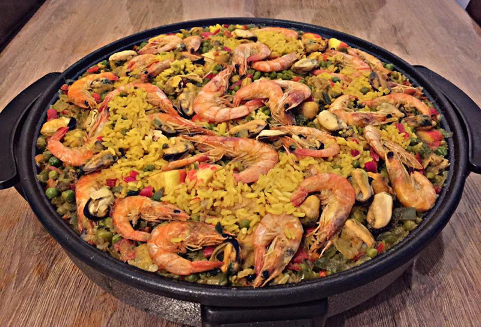

Paella met zeevruchten

Ingredienten
- 50 ml olijfolie
- 1kg gemengde zeevruchten
- 1l visbouillon
- 0,05 saffraan
- 1/2 witte
- 1/2 rode paprika
- 1 tl paprika poeder
- 250g gezeefde tomaten
- 400g paella rijst
- zout en peper
- 1 citroen
- 1/4 bosje peterselie
Bereiding
- Spoel de mosselen. Snijd de inktvis tubes open en in hapklare stukken.
- Zet een grote ondiepe brede pan op middelhoog vuur en doe de olijfolie erbij.
- Bak de zeevruchten een voor een in de olie.
Bak de garnalen tot ze net beginnen te kleuren aan de buitenkant. Bak de mosselen tot ze net open gaan staan.
Bak de inktvis voor circa 2 minuten. Zet apart.
- Laat de bouillon ondertussen warm worden in een apart pannetje en doe de saffraan erbij.
- Pel en snijd de ui en de knoflook fijn en voeg toe aan de pan. Snijd de paprika in kleine blokjes en doe ze erbij.
Bak alles tot zacht en glazig, circa 5 minuten.